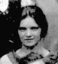

Up

Gray graph
Marion Cameron Gray
found in 1932 a graph that was first published in 1968 by Bouwer:
a cubic graph on 54 vertices with girth 8 that is semisymmetric,
i.e., edge-transitive and regular, but not vertex-transitive.
Malnič et al. showed in 2002 that this is the smallest
cubic semisymmetric graph.
Construction
In the generalized quadrangle GQ(2,4), remove the lines
from 3 disjoint GQ(2,1)'s. What is left is a geometry
with 27 points and 27 lines, three points on each line
and three lines on each point.
The point-line incidence graph is the Gray graph.
Equivalently, take the point-line incidence graph of
the Hamming cube H(3,3) (where now the rôles of points and lines
are reversed).
Group
The group is 33:(S4×2) of order 1296.
It is transitive on the points and on the lines and on the
edges (incident point-line pairs), but is not vertex transitive.
The point (line in H(3,3)) stabilizer is D8×S3.
The line (point in H(3,3)) stabilizer is S4×2.
(Both of order 48.)
Spectrum
The Gray graph has spectrum
±31, (±√6)6, (±√3)12, 016,
and is the unique graph with this spectrum.
Reference
I. Z. Bouwer,
An edge but not vertex transitive cubic graph,
Bull. Can. Math. Soc. 11 (1968) 533-535.
A. Malnič, D. Marušič, P. Potočnik & C. Wang,
An infinite family of cubic edge- but not vertex-transitive graphs,
Discr. Math. 280 (2002) 133-148.